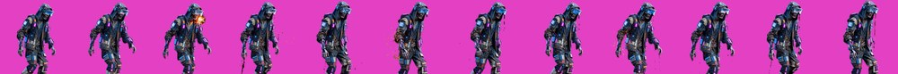
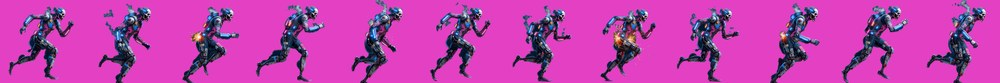
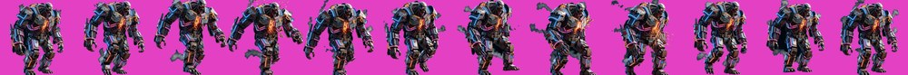
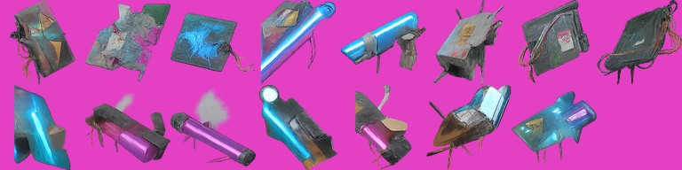
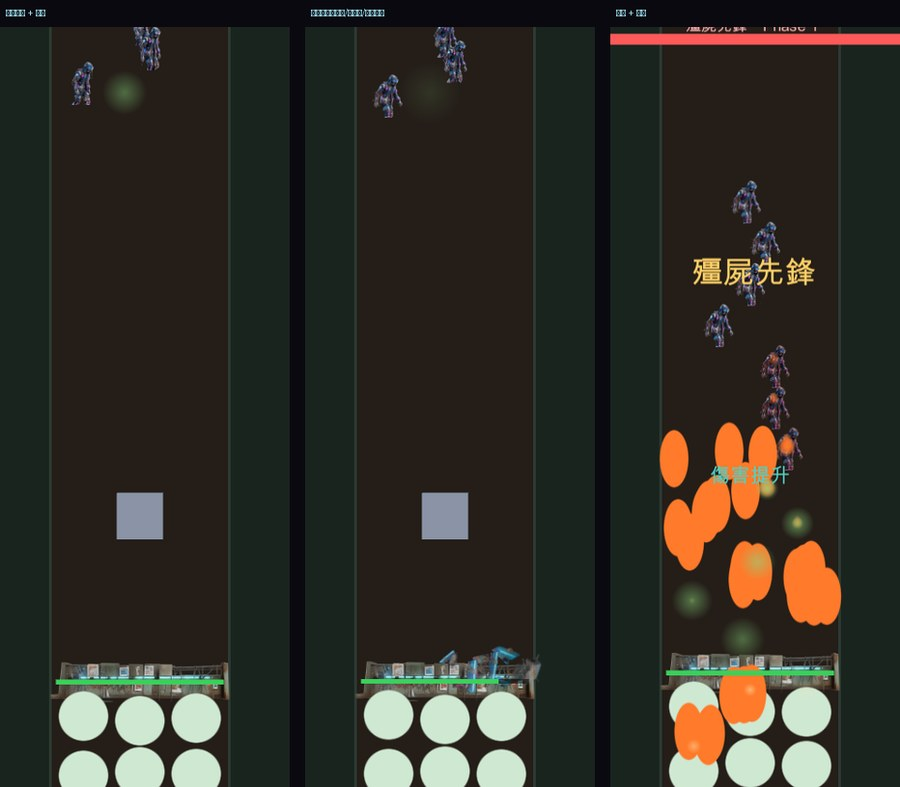
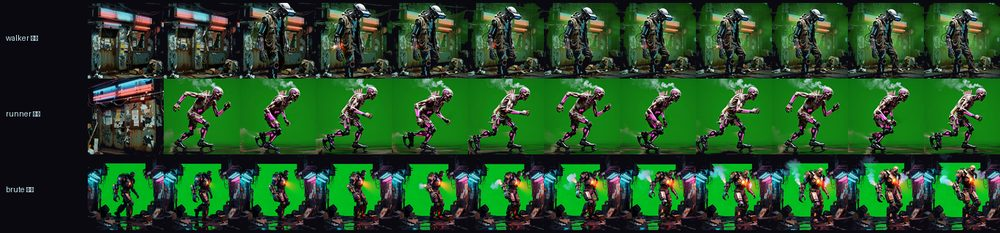

三種殭屍

walker 遊民 — 破爛連帽外套、皮下青藍電路光紋、粗糙義肢手臂、半毀 AR 目鏡。蹣跚拖行。幀間差異 15.6

runner 競速 — 碳纖維彈簧足義肢、洋紅過載光紋、脊椎散熱鰭片冒蒸氣。前傾急奔。幀間差異 19.9

brute 重裝 — 焊死在血肉上的廢棄裝甲、液壓工程機械臂、胸口橘色能量核心。沉重踏步。幀間差異 28.5
- 規格
- 各 12 幀、192px、去背透明度 69% / 76% / 52%
- 播放
- 速度跟著各自的移速走——固定 fps 會讓 brute 像用跑的、runner 像滑步
碎片素材

15 塊：扭曲金屬、電路板殘片（青藍線路）、碎玻璃、混凝土塊、還亮著的霓虹燈管殘段
- 套用
- 只換
Sr.sprite，噴散角度／初速／重力／存活時間／數量隨傷害縮放這些手感參數完全沒動
- 重用
- 之後駐守物被打爛、封印箱被打開、殭屍死亡都用同一份
實機

左：殭屍走路 + 護欄 中：碎片素材噴出 右：火焰粒子 + 殭屍推進
中間報廢了一批 $0.96
三支影片全部去背失敗
已修正

綠幕沒被去掉，而且直接生出整條街景（店面、招牌、地面）
- 根因是我的風格基底寫得太場景化。裡面有「堆積的雜物與垃圾」「漏水」「濕滑積水的地面」這類描述，生角色影片時模型把它讀成「畫一個場景」，環境指令壓過了「純綠幕」的要求——基底自己跟自己打架。
- 而且我違反了自己的規矩：該先出一支試樣確認，我卻一次下了三支。$0.96 就是這樣花掉的。
- 修法：基底拆成三個檔——
zl_style_base.txt 只描述「東西長什麼樣」，zl_style_char.txt 負責「只有一個角色、純綠幕、不可有任何場景」，zl_style_env.txt 才准畫環境。重生 walker 一支驗證通過後，才敢下剩下兩支。
花費
- 碎片素材 $0.40 ｜ 報廢的殭屍批 $0.96 ｜ walker 重生 $0.32 ｜ runner + brute $0.64
- 本輪合計 $2.32（其中 $0.96 是浪費掉的）
- 累計美術：吸血鬼 $2.88 + 殭屍 $3.52 = $6.40